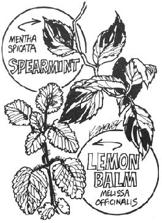

We hear about marigold, nasturtium and various herbs that can help keep bugs off the vegetables in the garden . . . but what about something to shoo insect pests from the gardener?
Stinging gnats-which bite about the face, eyes and behind the ears-really annoy me. Once, when the swelling from such a bite had nearly closed my right eye, I went to a doctor who wrote me a prescription ($4.00). I took the piece of paper to the drugstore and had it filled ($3.50). Then I swallowed the capsules and, in less than an hour, was staggering around like a drunkard. Another day and the swelling (also my $7.50) was gone.
Now when the gnats start buzzing, I pull a handful of spearmint or lemon mint, squeeze it to crush the leaves and rub the crumpled foliage where the little devils like to bite. The pests keep flying around, but won't light nor sink their fangs into me as long as the fragrant odor lasts.
Yes, I know: every supermarket and drugstore sells chemical insect repellents that will do the same job and do it longer. I also know that a drop of those commercial formulations in your eye can be much worse than a gnat sting. Such repellents have even been known to dissolve plastic watch crystals and eyeglass frames.
I'll stick with my mints. I have the plants growing in several places around the garden and I'm never far from their pleasant protection.
|
 |
|
|